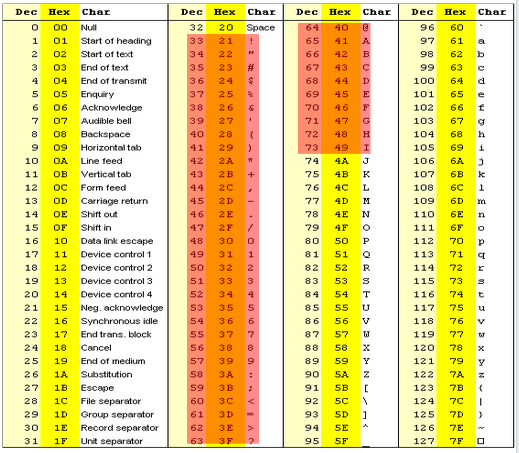
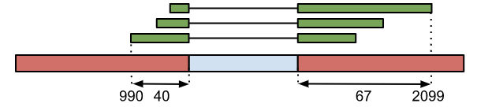
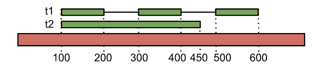

Formats
Contents
Formats#
Note
Un grand merci à Matthias Zytnicki !
FASTA#
Type de fichier#
Séquence
Signification du nom#
Format utilisé par l’outil FastA (fast alignment)
Qui le génère#
Presque tous
Qui le lit#
Presque tous, vous
Exemple#
>sequence1
CGATGTACGCTAGAT
Explications#
Chaque séquence commence par un chevron (>), suivi du nom de la séquence. Bien que cela ne soit pas obligatoire, il est recommandé que le nom de la séquence soit unique dans le fichier. La séquence elle-même suit.
FASTQ#
Type de fichier#
Séquence de lecture
Signification du nom#
Comme FASTA, mais avec la qualité (Q)
Qui le génère#
Le séquenceur
Qui le lit#
Les outils de mapping, les visualisateurs, vous
Exemple#
@SEQ_ID
GATTTGGGGTTCAAAGCAGTATCGATCAAATAGTAAATCCATTTGTTCAACTCACAGTTT
+
!''*((((***+))%%%++)(%%%%).1***-+*''))**55CCF>>>>>>CCCCCCC65
Explications#
Chaque séquence est codée sur 4 ligne : un @, suivi du nom de la séquence ; la séquence elle-même suit ; un + (avec éventuellement le nom de la séquence, encore une fois) ; la qualité de la séquence. La qualité de la séquence suit un codage particulier, où chaque caractère représente un nombre. En général, l’association est la suivante:

!correspond à 0“correspond à 1#correspond à 2$correspond à 3…
Icorrespond à 40
Chaque nombre représente la probabilité p de se tromper sur la lecture d’une base. Le code représente la valeur −10 log10(p). Par exemple, le caractère C code le nombre 34. Il représente donc une probabilité d’erreur d’environ 4.10-4. Les codes les plus à droite représentent donc les meilleures qualités. Attention : pour des données relativement anciennes, il existe d’autres codages de la qualité (i.e. d’autres associations entre les caractères et les nombres).
See also
Pour en savoir plus
Page Wikipedia du format : http://en.wikipedia.org/wiki/FASTQ_format
Référence : http://maq.sourceforge.net/fastq.shtml
Article NAR présentant le format : http://nar.oxfordjournals.org/content/38/6/1767.full
BED#
Type de fichier#
Annotation
Signification du nom#
Browser Extensible Format
Qui le génère#
Les outils d’annotation, TopHat
Qui le lit#
Les visualisateurs, vous
Remarque#
Le format BED est un format multi-forme, qui peut être utilisé dans beaucoup de contextes.
Exemple 1 (simple)#
chr1 100 200 peak_1 123
Explications#
Chaque ligne est une annotation. Les informations sont tabulées, i.e. chaque ligne contient un nombre fixe de colonnes (ici, 5), séparées par des tabulations.
Le format BED est utilisée pour beaucoup de types d’annotations, comme les régions MACS :
(chr1) le nombre du chromosome (ou du scaffold)
(100) position extrémale en 5’
(2099) position extrémale en 3’
(peak_1) nom systématique de la jonction
(123) score de la région
Dans d’autres contexte, on peut ne trouver que les 3 ou 4 premiers champs.
Exemple 2 (jonctions entre exons)#
chr1 990 2099 JUNC00001560 3 + 990 2099 255,0,0 2 40,67 0,1042
Explications#
Ici, le format contient 12 colonnes: 6. (chr1) le nombre du chromosome (ou du scaffold) 7. (990) position extrémale en 5’ des lectures chevauchant la jonction 8. (2099) position extrémale en 3’ des lectures chevauchant la jonction 9. (JUNC00001560) nom systématique de la jonction 10. (3) nombre de lectures couvrant la jonction 11. (+) brin 12. (990) même chose que la colonne 2 13. (2099) même chose que la colonne 3 14. (255,0,0) pas important 15. (2) pas important 16. (40,67) taille maximum des lectures couvrant l’exon à gauche et à droite de l’intron. 17. (0,1042) pas important

GTF#
Type de fichier#
Annotation
Signification du nom#
Gene Transfer Format
Qui le génère#
Les outils d’annotation
Qui le lit#
Les browsers, TopHat
Exemple#
chr20 example exon 100 200 . + . gene_id "g1"; transcript_id "t1";
chr20 example exon 300 400 . + . gene_id "g1"; transcript_id "t1";
chr20 example exon 500 600 . + . gene_id "g1"; transcript_id "t1";
chr20 example exon 100 450 . + . gene_id "g1"; transcript_id "t2";
Explications#
C’est un autre format tabulé à 9 champs. Chaque exon est noté sur une ligne :
(chr20) le chromosome
(example) la source de l’annotation, habituellement l’outil qui a généré l’annotation
(exon) le type d’annotation ; nous avons ici des exons, mais cela pourrait des CDS (si l’on s’intéressait aux protéines traduites)
(100) le début de l’annotation
(200) la fin de l’annotation
(.) pas important
(+) le brin
(.) pas important
(gene_id “g1”; transcript_id “t1”;) les attributs, ou champs. C’est un fourre-tout. On peut y trouver le nom usuel du gène.
Le champ 9 indique à quel transcrit et quel gène appartient chaque exon.

See also
Pour en savoir plus
Documentation : http://mblab.wustl.edu/GTF22.html
Le format GTF est adapté du format GFF, moins contraint. Documentation du format GFF : http://www.sequenceontology.org/gff3.shtml
GFF#
Type de fichier#
Annotation
Signification du nom#
Gene Feature Format
Qui le génère#
Les outils d’annotation
Qui le lit#
Les browsers
Exemple#
chr20 example exon 100 200 . + . gene_id "g1"; transcript_id "t1";
chr20 example exon 300 400 . + . gene_id "g1"; transcript_id "t1";
chr20 example exon 500 600 . + . gene_id "g1"; transcript_id "t1";
chr20 example exon 100 450 . + . gene_id "g1"; transcript_id "t2";
Explications#
C’est un autre format tabulé à 9 champs. Chaque exon est noté sur une ligne :
(chr20) le chromosome
(example) la source de l’annotation, habituellement l’outil qui a généré l’annotation
(exon) le type d’annotation ; nous avons ici des exons, mais cela pourrait des CDS (si l’on s’intéressait aux protéines traduites)
(100) le début de l’annotation
(200) la fin de l’annotation
(.) pas important
(+) le brin
(.) pas important
(gene_id “g1”; transcript_id “t1”;) les attributs, ou champs. C’est un fourre-tout. On peut y trouver le nom usuel du gène.
Note
Les format suivants seront bientôt disponibles:
SAM
BAM
BAI
WIG
BedGraph
BigWig
Pileup
VCF